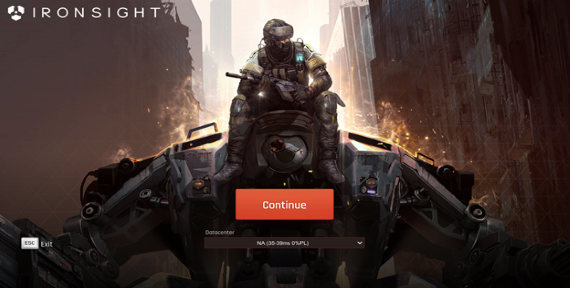

Ironsight: The free version of "Call of Duty"
March 8, 2021 Ironsight is a first-person shooter game that features modern guns in a simi future atmosphere. The game prime focus is multiplayer gameplay that offers a variety different game mode to compete against other players. Currently, this is a PC exclusive game yet there are rumors that it could be released on PlayStation platforms which would be a major competitor against the Call of Duty company.
This game is straight to the point, where it allows the player to quicky jump in any game mode and expect it to be fast paced. The ideal gamer to be playing this game is someone with little time on their hands and wants to squeeze in as many matches as possible. If time is not an issue then, the game provides the consumer with a training center that allows the player to test every gun and explosive that it has to offer. In the training center, the first thing that caught my attention was the wide selection of different guns to choose from, along with weapon customization opportunities. Ironsight mixes old playstyle components that worked perfectly in the past, while introducing some futuristic technology into the mix. Somehow this company can find the right balance between those two opposite concepts. Ironsight achieved that goal by maintain traditional boots on the ground warfare with recognizable guns and left the high technology aspect to primarily the killstreaks perks. In so many ways, this game is like a new version on “Call of Duty: Black Ops 2”. This game is worth downloading for free, considering how much content is being provided within Ironsight as a first person shooter.